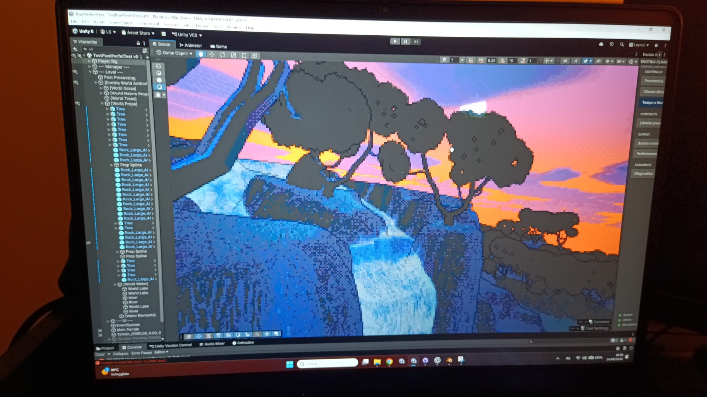

LONG-TERM PROJECT / CASE STUDY
Vitis: A Wine Country Tale
Vitis: A Wine Country Tale is a long-term Unity project centered on building a stylized world inspired by the Italian countryside.

Overview
A stylized world built together with the tools needed to shape it.
Core systems